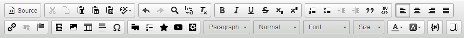
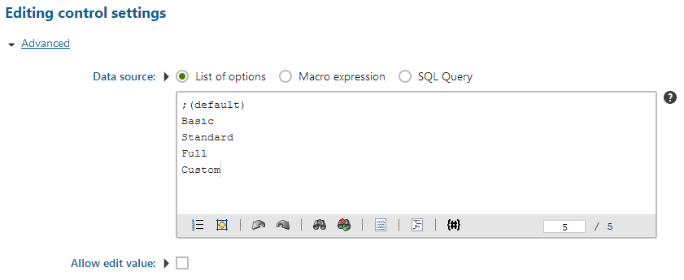
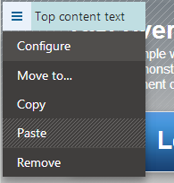
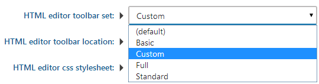
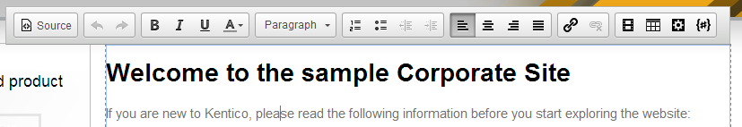
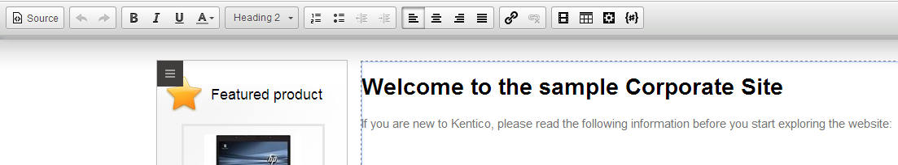
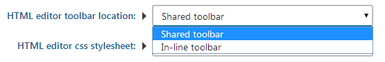

Personalizing the editor toolbars and buttons
The editor toolbar is flexible and customizable. By default, the system uses different toolbar configurations for different types of content. This helps keep the interface clean. You can also modify the default toolbar sets or prepare your own custom sets.
Standard toolbar sets
Kentico ships with several standard toolbar sets that are used by various applications:
Full
Basic
Standard/Default
BizForm - used for on-line forms.
Forum - used for the editor in forums (if enabled).
EmailWidgets - used for email widgets content.
Reporting - used for report content.
Invoice - used for invoice content.
Group - used for groups.
Widgets - used for widgets.
Defining toolbar sets
You can either modify existing toolbar sets or create your own custom toolbar sets.
To define toolbar sets, edit the <web project>\CMS\CMSAdminControls\CKeditor\config.js file.
The following code sample shows a definition of the full toolbar set containing all available buttons. You can create custom toolbar sets by using names of the default buttons, or by adding buttons of custom CKEditor plugins.
config.toolbar_Full = [ [sourceName, '-'], ['Cut', 'Copy', 'Paste', 'PasteText', 'PasteFromWord', 'Scayt', '-'], ['Undo', 'Redo', 'Find', 'Replace', 'RemoveFormat', '-'], ['Bold', 'Italic', 'Underline', 'Strike', 'Subscript', 'Superscript', '-'], ['NumberedList', 'BulletedList', 'Outdent', 'Indent', 'Blockquote', 'CreateDiv', '-'], ['JustifyLeft', 'JustifyCenter', 'JustifyRight', 'JustifyBlock', '-'], '/', ['InsertLink', 'Unlink', 'Anchor', '-'], ['InsertImageOrMedia', 'QuicklyInsertImage', 'Table', 'HorizontalRule', 'SpecialChar', '-'], ['InsertForms', 'InsertPolls', 'InsertRating', 'InsertYouTubeVideo', 'InsertWidget', '-'], ['Styles', 'Format', 'Font', 'FontSize'], ['TextColor', 'BGColor', '-'], ['InsertMacro', '-'], ['Maximize', 'ShowBlocks']];
Each toolbar set definition consists of several arrays representing toolbar groups. For example, the ['Styles', 'Format', 'Font', 'FontSize'] array represents a group of four buttons.
If you need to insert a line break between the button groups, use the '/' string.
If you want to define your own toolbar set, add a command in the config.toolbar_ToolbarName format to the config.js file.
Important: When you modify the config.js file (or any other file used by the editor), the changes only apply after you clear your browser cache.
After defining a custom toolbar:
Adding custom toolbars to available toolbar sets
To make the toolbar that you defined available on the Page tab of the Pages application in Kentico, you need to add it as an option of the Editable text web part.
Open the Web parts application.
Edit the Editable text web part.
Switch to the Properties tab.
Select the HTMLAreaToolbar property.
Add the new toolbar set to the Data source setting. Enter the ToolbarName from the config.toolbar_ToolbarName command you used in the toolbar definition.

Adding custom toolbar to the Editable text web partSave.
The custom toolbar is now available for selection on pages.
Changing the toolbar set used on a page
To assign a specific toolbar set for editable regions on individual pages:
Open the Pages application.
Select the page on which you want to change the toolbar set.
Switch to Design and Configure the web part for which you want to change the toolbar.

Configuring a web partUnder Behavior, change the HTML editor toolbar set property values to the name of the desired toolbar set.

Changing toolbar set in the Editable text web partClick Save & Close.
Users now see the appropriate toolbar set when editing the content of the page.
Changing the editor toolbar location
By default, the In-line version of editor toolbar is used. The in-line toolbar is attached to the text area that users are currently editing. The in-line toolbar is visible only when users work with the text area, that is, they click into the area.

In-line editor toolbar displays above or below a text area
You can also switch to the Shared version of the toolbar, which is then visible at the top of the page that users are editing. The shared toolbar is visible at the top of the page at all times.

Shared editor toolbar displays at the top of the page
To switch from an in-line to a shared editor toolbar:
Open the Pages application.
Select the page on which you want to change the toolbar set.
Switch to Design and Configure the web part for which you want to change the toolbar.
Under Behavior, change HTML editor toolbar location to Shared.

Switching to Shared toolbarClick Save & Close.
Users now see the toolbar on the location of the shared toolbar.
Configuring toolbars for page fields with the Rich text editor form control
To configure which toolbar is used to edit fields on structured pages (fields with the 'Rich text editor' form control edited via the Form/Content tab), set the field's Toolbar set property:
Open the Page types application.
Edit the page type you wish to configure.
Switch to the Fields tab and select a field with the Rich text editor form control.
Under Editing control settings, click Advanced.
Type the name of the toolbar set you wish to use when editing the field into Toolbar set.
(Optional) Specify a toolbar location in Toolbar location.
If not specified, the field is bound to a default toolbar at the top of the page.
Configuring visibility of editor buttons
With Kentico, you can show or hide buttons from the integrated editor toolbar. Each button in the toolbar is represented by a UI element.
Open the UI personalization application.
On the Editor tab, select a site and a role.
Browse the UI element tree and select or clear the check boxes that represent the editor buttons.
The system automatically saves the settings as you select or clear check boxes in the UI element tree. The system hides the buttons (UI elements) that have their check box cleared for users in the selected role.
If a user is a member of multiple roles, they're allowed to see UI elements from all their roles combined.
Using UI personalization for custom toolbar buttons
With Kentico, you can show or hide buttons from the integrated editor toolbar. Each button in the toolbar is represented by a UI element. The editor buttons are grouped into categories. Categories are represented by parent UI elements in the UI element tree.
If you want to display custom editor buttons based on UI personalization settings, you need to create matching UI elements:
Open the Modules application.
Edit the WYSIWYG editor module.
Switch to the User interface tab.
Navigate to the CMS -> Administration -> Configuration -> UI personalization -> Editor -> WYSIWYG Editor section of the UI element tree.
Create the required elements under the WYSIWYG Editor element (Click New element
 ).
).The elements must be assigned to a custom module (you can use the default Custom module if you do not have a different custom module).
UI elements representing buttons must have the same Code name as the button name used in the toolbar definitions within the config.js file. This is case sensitive.
The system then uses the following process to display editor buttons:
Action buttons are loaded into each toolbar based on the toolbar definition.
If UI personalization is enabled, action buttons are filtered according to UI personalization settings of the user's roles.
Toolbar personalization on the live site
Toolbar personalization is disabled by default on the live site. If you wish to apply UI personalization to editor toolbars on the live site, add the following key to the /configuration/appSettings section of your project's web.config file:
<add key="CKEditor:PersonalizeToolbarOnLiveSite" value="true" />Once this is done, all UI personalization settings apply to editors on the live site.